escritor
si me encuentras por la calle y buscas en mi mochila
encontrarás una libreta y una cámara fotográfica
(quizá, también una cajita de acuarelas)
Nací en febrero de 1954 en un pueblo de Segovia, pero crecí en Madrid. Volví a nacer cuando decidí dedicarme a escribir hace unos años, después de dar clases de matemáticas durante mucho tiempo. Me he empapado de miles de lecturas, viajando con Verne, Melville, Poe, Kafka, Nabokov, Borges y Cortázar. Leo, escribo, paseo, fotografío, disfruto del cine y la música, viajo cuando puedo. Me repugnan la injusticia y la barbarie, odio la guerra, no comprendo el hambre en el planeta y desprecio a quienes se enriquecen a costa ajena.
"El diccionario de Ricardo Gómez" es una entrevista publicada en la revista "Lazarillo" en 2007, donde a través de entradas alfabéticas hablo sobre conceptos que me definen: amor, arte, compromiso, educación, literatura, Sáhara, solidaridad y muchos más. Defiendo el conocimiento científico, critico la injusticia y la guerra, reivindico la literatura sin fronteras de edad. Hablo de mi pasión tardía por la escritura, mi trabajo como profesor de matemáticas, mis lecturas fundamentales y mi compromiso social. Es un retrato íntimo y público a la vez, donde expreso mis convicciones sobre el mundo, la literatura y la necesidad de cambiar las cosas.
Las biografías están bien para cuando uno está muerto, que no es mi caso de momento. Leí desde muy niño gracias a un abuelo que me contaba historias por los campos de Castilla. Comencé a escribir pasados los cuarenta, después de haberme preparado durante años leyendo, y ahora la escritura me apasiona tanto que no puedo vivir sin ella. Escribo sobre cosas que me gustan y otras que me hieren, orgulloso de mis libros que me han dado premios y, sobre todo, satisfacciones. Disfruto del cine, la fotografía, la música, los paseos y, especialmente, de mis dos hijos y de las personas que me quieren.
De niño esperaba con ganas el recreo para jugar al guá, al rescate, a las chapas o al pañuelo. Con el tiempo, dejó de ser alumno y se convirtió en profesor de Matemáticas, jugando ahora con los números, que siguen encantándole. Pero como ser "de ciencias" no significa que no pueden gustarte los libros, un buen día decidió jugar con las letras y se hizo escritor. Si le encuentras por la calle y buscas en su mochila, encontrarás una libreta y una cámara fotográfica. Toma nota de casi todo y trata de registrarlo, porque nunca sabe dónde va a encontrar una buena historia que merezca la pena ser contada.
Si puedes, no te pierdas los bonus que verás junto a los títulos...
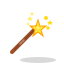
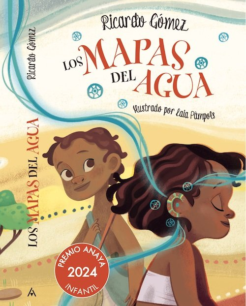
En el desierto, el agua es tan valiosa como la sangre. Allí, desde que se nace se aprende a no desperdiciar una gota. Hasta un niño sabe que un buche puede salvar una vida; que una calabaza, la vida de una familia; que un pozo, la vida de un pueblo.
Un desierto.
En el desierto, un poblado.
Y bajo la arena, el agua.
Novela juvenil • Editorial Anaya
Las N'Wone, o mujeres-agua son vitales en el desierto. Pero a la última N'Wone le sucede su hija Nanga, que tiene solo ocho años; demasiado joven para ser una mujer-agua. El agua del pozo se está secando y solo Nanga puede encontrar la solución. Emprenderá un viaje con su hermano Rai, poco mayor que ella, con un destino incierto, tratando de salvar al poblado. Con ilustraciones de Laia Pàmpols.
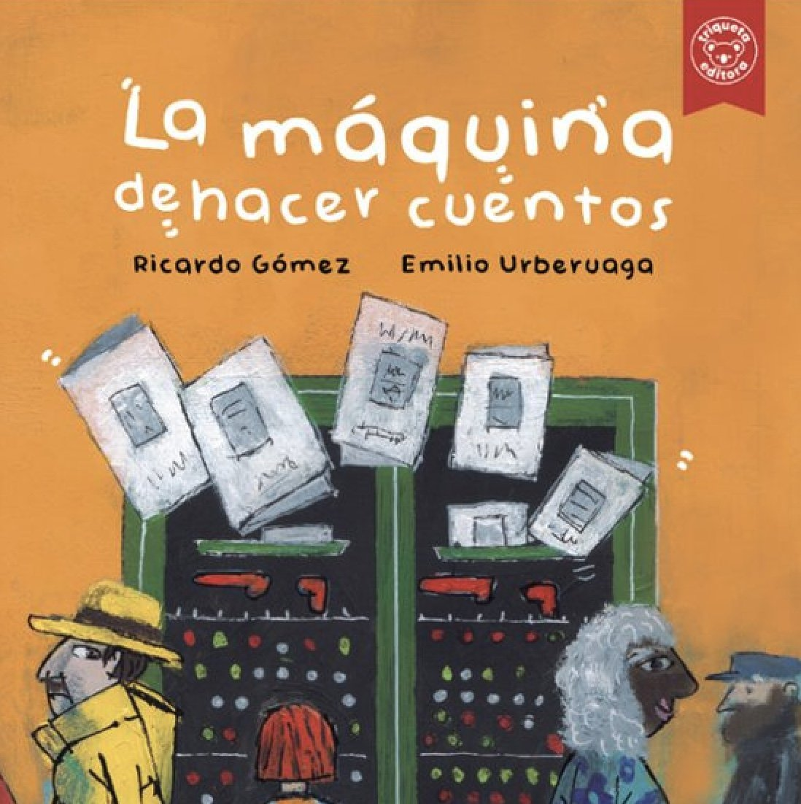
Era primavera en la ciudad. Más concretamente, el mes de abril. Para ser exactos, el día 21, dos antes de la celebración del Día del Libro, una fecha que las cinco librerías del lugar aguardaban con regocijo. Ese día, esperaban vender muchos libros.
Bueno, o por lo menos, bastantes libros.
Narrativa infantil • Editorial Triqueta
A la ciudad ha llegado una máquina capaz de crear cuentos adaptados a los gustos de mayores y pequeños. Pero no todo el mundo parece satisfecho con el invento. Celeste no tarda en anticipar algunos problemas y descubrirá que la máquina esconde una conspiración que amenaza con extenderse por el país y el mundo entero. Una divertida reflexión sobre los riesgos de la Inteligencia Artificial. Con ilustraciones de Emilio Urberuaga.
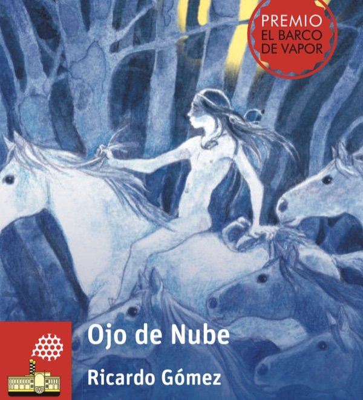
Al sentir los primeros dolores del parto, Abeto Floreciente dejó caer en el suelo la bolsa en que recogía moras silvestres y avisó a su madre:
—Madre, ya llega...
Luz Dorada la sostuvo por la cintura y caminó con ella hacia un claro del bosque. Otras dos mujeres dejaron la recolección y la acompañaron...
Novela histórica juvenil • Editorial SM
Esta novela recupera la vida salvaje en la gran pradera norteamericana, antes de la llegada del hombre blanco, a través de una tribu de indios crow. Los nativos ven llegar a hombres barbados, con caballos y armas aterradoras que causan estragos en la población de bisontes y cambian lo que ha sido el mundo de los habitantes de esas tierras. Ojo de Nube, un niño ciego de nacimiento, se convertirá en el miembro más útil de la tribu gracias a sus extraordinarias habilidades. Ilustraciones de Jesús Gabán.
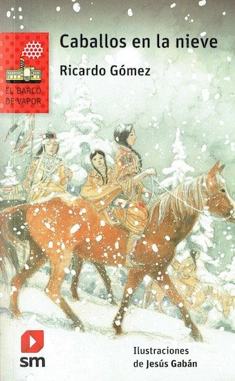
Yo aún no había nacido entonces, así que lo que voy a contaros ahora me lo contaron a mí. Dicen que, durante aquellos meses de frío, la obsesión era mantener el fuego. Sin fuego, solo protegidos por la piel de nuestros tipis, acosados por la nieve y la ventisca, estábamos perdidos.
Novela juvenil • Editorial SM
La continuación de "Ojo de Nube". Una misteriosa narradora cuenta, muchos años después de que Ojo de Nube y los suyos tuvieran que huir de sus tierras tras de robar caballos de los hombres blancos, a qué dificultades se enfrentaron en territorios agrestes y llenos de peligros. Las mujeres, entre ellas una niña llamada Caballos en la Nieve, toman un papel relevante en la supervivencia de las tribus crow, montando a caballo y luchando al lado de los hombres. Una historia basada en hechos que pudieron ser reales y que trata de recrear la dura existencia de las tribus nativas norteamericanas. Ilustraciones de Jesús Gabán.
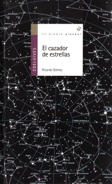
Por lo que podía adivinar a través de la cortina de gasa, el sol estaría atravesando la tensa línea del horizonte. Una hora más tarde, la temperatura sería agradable y comenzarían los amables ritmos de la noche.
Él no participaría en ellos, pero hasta la habitación llegarían voces, músicas y sonidos que recordarían un mundo vivo.
Novela juvenil • Editorial SM
Bachir es un adolescente que vive en un campamento de refugiados saharauis. Una dolencia pulmonar le obliga a permanecer en su jaima, sin más contacto que la familia y algunos visitantes ocasionales. Una noche conoce por azar a Hamida, un anciano sabio con quien habla de la historia de su pueblo y del nombre de las estrellas. Tras este encuentro descubre que la verdadera prisión no es su enfermedad sino la desesperanza, y que ambas cosas pueden tener cura. Libro inspirado en personajes reales. Con fotografías del autor.
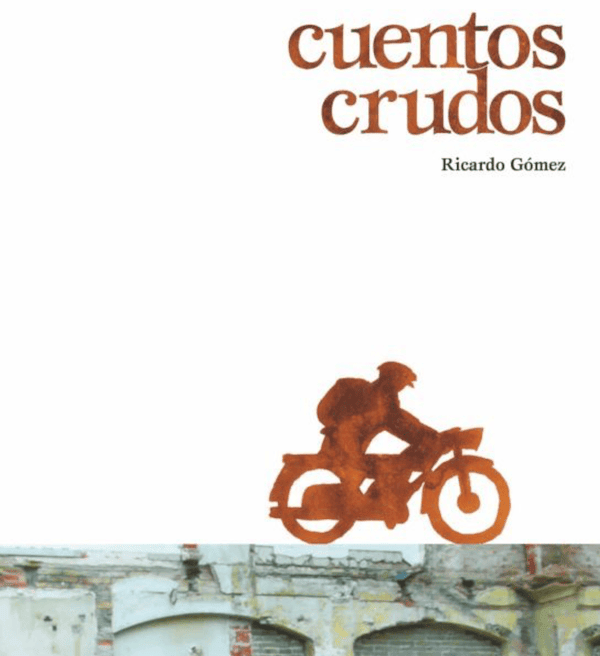
El perro de Goya en Beirut
Trece horas antes de que el perro semihundido asomase la cabeza por encima de aquel montón de tierra, Fairuz Mernisi se levantaba, como todas las mañanas, para ir a la escuela.
Su madre la obsequió al despertarse con una sonrisa y un humeante tazón de leche.
Relatos juveniles • Editorial SM
Nueve relatos sobre situaciones duras en diferentes partes del mundo. Sus protagonistas (una niña beirutí, un muchacho saharaui, un joven camboyano, una mujer peruana… incluso personajes anónimos que viven en nuestro mundo cotidiano o que habitaron la sabana africana) se enfrentan a circunstancias difíciles, haciendo lo posible por sobrevivir con dignidad. Historias crudas, pero no faltas de esperanza. Ilustrado por Juan Ramón Alonso.
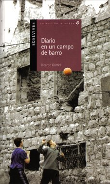
1 de agosto.
Prometí que os escribiría nada más llegar, pero llevo cuatro días aquí y estas son mis primeras líneas. Cuando os vi desaparecer a través de la ventanilla del autocar saqué este cuaderno con la intención de anotar mis sentimientos sobre los meses de estancia en vuestra casa, pero no quise que la letra temblorosa ensuciara las primeras páginas.
Novela juvenil • Editorial Edelvives
Nushi, una adolescente, vuelve a su país en los Balcanes tras haber pasado un año acogida por una familia española. Desde el campo de refugiados escribe un diario con sus vivencias, reflejando sus miedos, esperanzas y deseos de una nueva vida. A pesar del silencio de sus padres y de su hermano, descubre gracias a nuevos amigos lo que fue el horror de la guerra y el destino de otro hermano desaparecido.
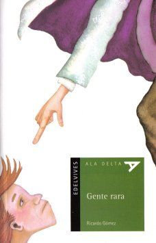
En mi clase somos un poco raros.
La directora del cole debe de haber ido por ahí buscando gente rara para meterla en nuestra clase.
Laura, cuando está resfriada, en lugar de estornudar le da por reírse a carcajadas. Pero su mayor habilidad es colocar un lápiz encima de la mesa y mirarlo fijamente. Después de un rato, el lápiz empieza a rodar.
Narrativa juvenil • Editorial Edelvives
En la clase de Patricia todos son un poco raros. Los días transcurren con normalidad hasta que aparece La Escoba, un nuevo profesor que pretende que todos sean estudiantes ejemplares, aunque sea a costa de robarles el alma. Pero Patricia, Laura y algunos compañeros, con ayuda de su auténtica profesora, harán lo imposible por recuperar la normalidad de sus vidas. Ilustraciones de Tesa González.
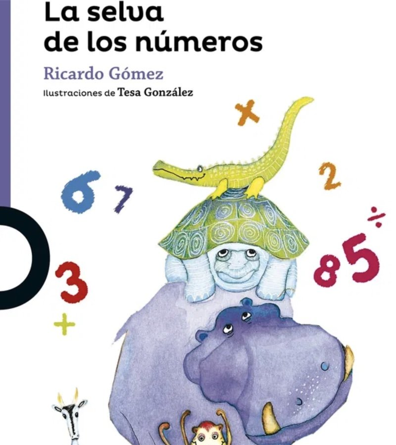
Hace mucho mucho tiempo, aunque nadie puede decir cuánto, había una enorme selva en la que vivían bastantes gacelas, algunos leones, muchos monos, algunos elefantes, muchísimos caracoles, algunos leopardos, enormes cantidades de lagartijas y una tortuga.
En definitiva, había pocos animales más o menos grandes y muchos animales más o menos pequeños. Y la tortuga.
Narrativa infantil • Editorial Alfaguara
Hace ya mucho tiempo, una sabia y vieja tortuga descubrió algo sorprendente que servía, entre otras cosas, para poner orden en la remota selva en que vivía: los números. Decidida a compartir su sabiduría, fue mostrando su invento a diversos animales, y estos lo utilizaron para los más variados fines. Una historia que combina matemáticas y narrativa de manera amena y divertida. Ilustraciones de Tesa González.
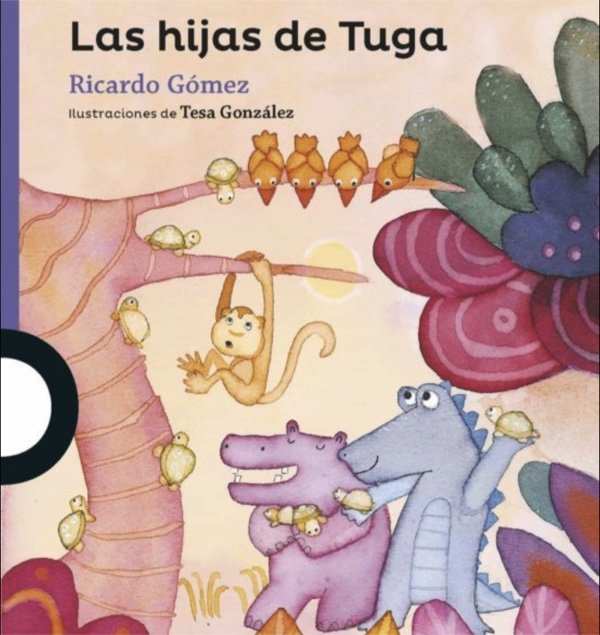
Ciento ocho huevos. Nada menos que ciento ocho huevos había puesto Tuga en un agujero cavado con esfuerzo, una noche de luna llena, en la arena fresquita de un río.
Para eso, Tuga había sido igual de hábil que otras tortugas, unos animales que ponen más o menos esos huevos cada vez que van a tener hijos.
Narrativa infantil • Editorial Alfaguara
Tuga, la famosa tortuga inventora de los números, acaba de tener 52 hijas. Todas han roto el cascarón y han salido a hacer su vida, como debe ser. Todas menos una, ¡que se ha quedado con Tuga y que además es una preguntona! Pero un día la pequeña tortuguita desaparece. La continuación de "La Selva de los Números", donde las matemáticas siguen siendo protagonistas de una aventura divertida y educativa. Ilustraciones de Tesa González.
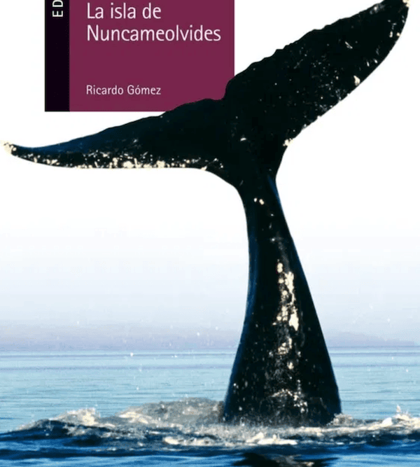
Cuando tenía ocho años, Fabio estuvo a punto de morir de unas fiebres.
Entonces, los médicos iban a las casas para atender a los enfermos, despedir a los moribundos o recibir a los recién nacidos.
De eso hace mucho tiempo.
Nadie, ni siquiera el médico, pensó que Fabio sobreviviría.
Novela juvenil • Editorial Edelvives
Cuando tenía siete años, Fabio estuvo a punto de morir de unas fiebres. Mientras deliraba repetía que quería ver el mar, algo incomprensible en un pueblo que estaba lo más lejos del mar que podía estar. Fabio sobrevivió, se hizo marinero y capitán, dio varias vueltas al mundo. Una historia de aventuras, amor y mar inspirada en las grandes novelas de Stevenson, Salgari y Melville.
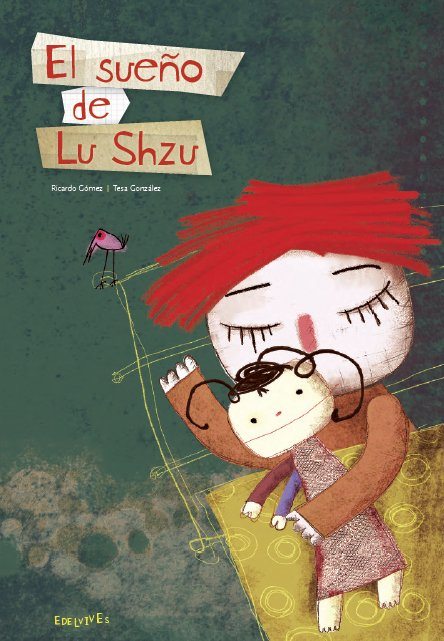
Álbum ilustrado • Editorial Edelvives
Pudo suceder hace mucho tiempo, en China (aunque da igual el sitio). Lu Shzu es una niña de ocho años que debe trabajar en una fábrica de juguetes para ayudar a su familia. Con el tiempo, se encaprichó de una de las muñecas que pasaban por sus manitas, pero no podía pagarla e hizo algo indebido. El encargado tomó represalias. Su abuela fue a hablar con este, restauró el honor de la familia e hizo algo que Lu Shzu no olvidaría. Con el tiempo, contó su historia a su hija. Un bellísimo álbum con el que Tesa González trabajó durante tres años y que recibió numerosos elogios aquí y en el extranjero.
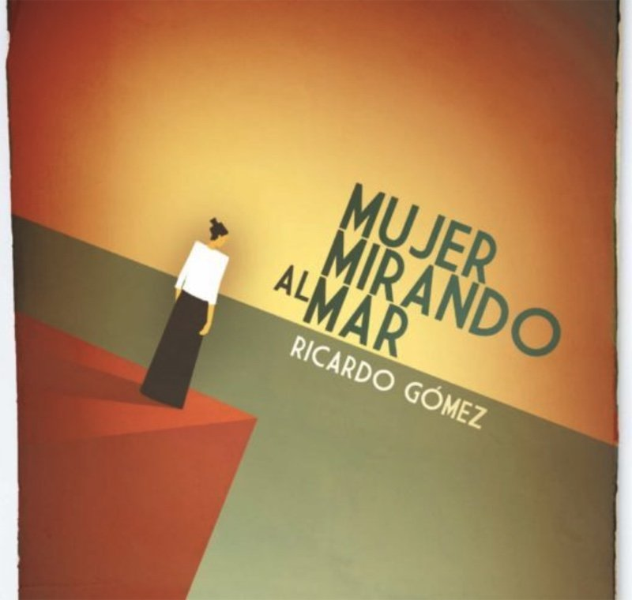
Novela para adultos • Editorial SM
A caballo entre la ficción adulta y juvenil. Un escritor rebusca en un puesto de libros y encuentra un poema narrado en primera persona que narra la confesión del asesinato de un hombre a manos de su pareja en plena época de posguerra. El escritor trata de encontrar a los verdaderos protagonista de la historia, y su búsqueda desvela otros secretos. ¿Dónde empieza la ficción y dónde la realidad? Una novela que trata sobre los límites del amor y la construcción literaria, y que combina la narrativa con la poesía. La ilustración es de Eduardo Ortiz.
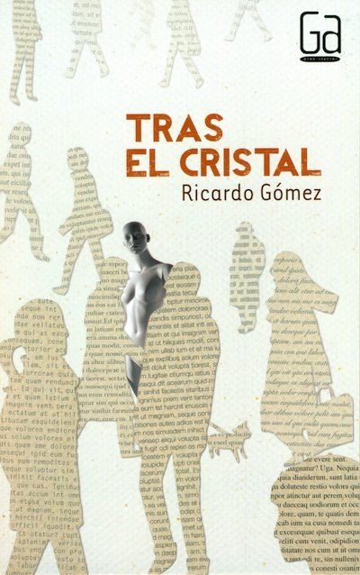
Relatos • Editorial SM
Once relatos que muestran la vida de personas anónimas como acontecimientos únicos, extraordinarios e irrepetibles. Cualquier situación y cualquier persona adquieren protagonismo cuando se miran tras el cristal de la literatura.
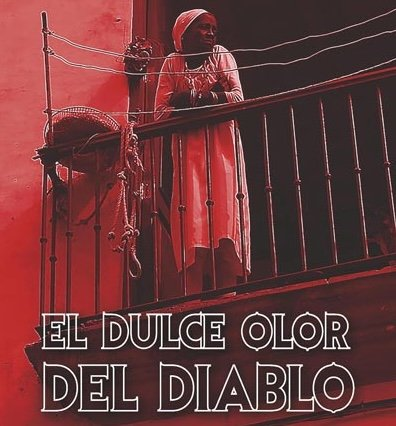
Novela para adultos • Editorial Narval
En su decimoquinto cumpleaños, Andrea recibe varios regalos inesperados. Una agresión despierta en ella un sentido dormido: el olfato. Su progresiva percepción de olores le permitirá detectar secretos íntimos. Un thriller psicológico que aborda violencia, género e iniciación sexual.
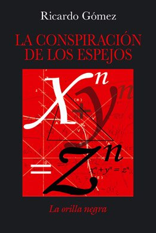
Novela para adultos
La resolución del teorema de Fermat lleva de cabeza al catedrático Patricio Virseda. Iniciará una espiral de locura cegado por la ambición. Una novela inteligente sobre incomunicación, mundos paralelos y cómo todo en la vida está encadenado como en una ecuación matemática.
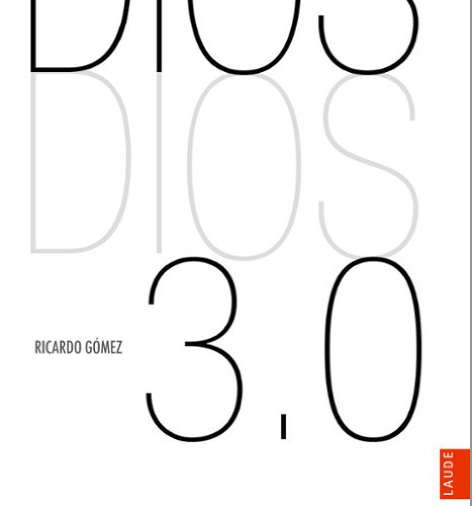
Novela para adultos • Editorial Laude
Dios, que ha dejado a la humanidad a su libre albedrío tras la creación del mundo, decide intervenir para intentar combatir la barbarie, la superstición y los falsos dioses. Para ello, reúne en un oasis a cuatro mujeres y a cuatro hombres de distintas culturas, acompañados de otros tantos ángeles. El encargo divino es que elaboren un Libro Sagrado que difunda el Conocimiento y la Razón. Pero la convivencia entre ángeles y humanos dará lugar a situaciones inesperadas.
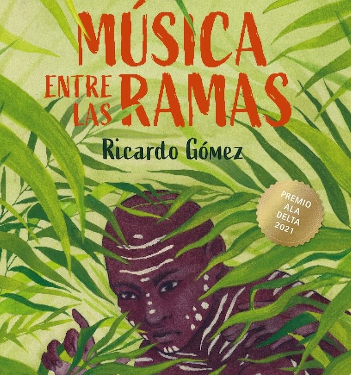
Cuando los primeros madereros llegaron con sus motosierras, Emeka tenía doce años.
Los cinco primeros años habían sido los de la mano derecha de su madre. Durante ese tiempo se crio con las mujeres y otros niños y niñas de su edad.
Los cinco siguientes fueron los de la mano derecha de su padre. Durante ese tiempo convivió con los hombres y otros muchachos de su edad.
Novela juvenil • Editorial Edelvives
Las motosierras de los hombres blancos han llegado a la selva habitada por los bayaka, una tribu acostumbrada a vivir en armonía con la naturaleza. El joven Emeka se pregunta si podrá hacer algo para ahuyentar la amenaza. Un fascinante canto a la naturaleza y a las culturas indígenas que alerta sobre los peligros de alterar el equilibrio de la selva. Ilustrado por Christa Soriano.
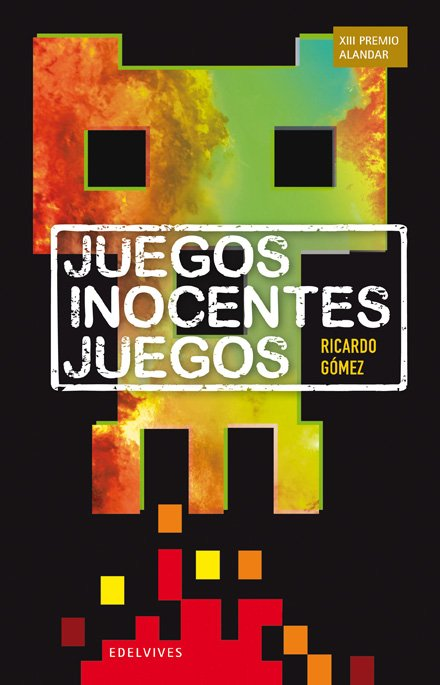
En el mundo real me llamo Sebastian, sin tilde en la a, pero son pocos los que utilizan ese nombre. Muchos más me conocen como "El Asesino". No es que me guste demasiado, pero a estas alturas no puedo hacer nada por evitarlo.
La gente que me llama Sebastian piensa que siempre he sido un chico difícil. Mis profesores se lo explican refiriéndose a la separación de mis padres, la muerte de mi hermana y blablablá, todos esos tópicos. Son chorradas, pero reconozco que a veces me he escudado en ellas.
Novela juvenil • Editorial Edelvives
Sebastián es un adolescente madrileño conocido como "el Asesino" en el mundo virtual. Su afición por los videojuegos le lleva a probar simuladores de drones. Sin saberlo, lo que pilota son aviones reales que atacan a personas reales en zonas de conflicto. El relato se entrecruza con historias que narran lo que sucede al otro lado de su pantalla, mostrando las devastadoras consecuencias de esos juegos que el chico cree inocentes.
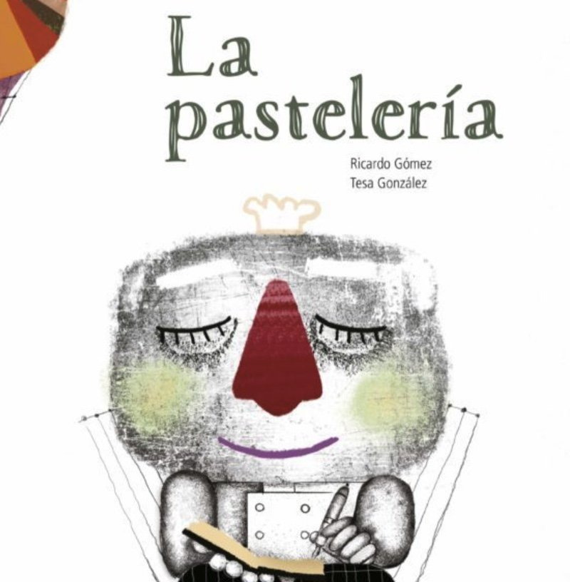
Álbum ilustrado • Editorial Edelvives
El afamado pastelero Kuchen se instala inesperadamente al final de la calle Strasse. Pronto todos los vecinos, niños y adultos, empiezan a fantasear sobre los maravillosos dulces que elaborará. Pero pasan los días y la pastelería no abre sus puertas. Los estantes siguen vacíos y la gente comienza a murmurar... Un álbum ilustrado por Tesa González con una historia llena de magia y sorpresas.
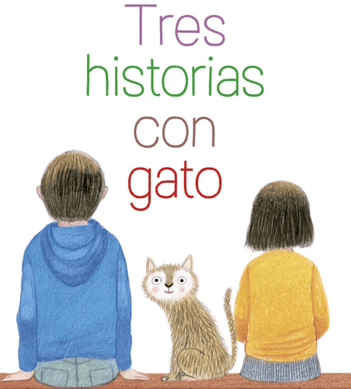
Me llamo Claudia y tengo siete años. Bueno, en realidad tengo seis, pero cumpliré siete el mes que viene. Soy la más pequeña de la casa, ahora que Cepillo ha desaparecido.
Cepillo es nuestro gato. Se marchó de casa el lunes y todavía no ha vuelto. Lo hemos buscado por los alrededores, pero no aparece. Preguntamos a los vecinos y colocamos anuncios en las farolas, y nada. Ya han pasado cuatro días desde que se fue.
Narrativa infantil • Editorial Edelvives
Claudia y Dani están muy enfadados porque Cepillo, su gato, ha desaparecido. Cuando llegó a su casa, puso patas arriba la vida de la familia. Ahora repasan los momentos felices de su vida en común y se preguntan si se ha perdido o ha sido secuestrado. Pero, en realidad, ninguno sabe la verdad, excepto el propio Cepillo. Tres historias narradas desde diferentes puntos de vista: Claudia, Dani y el propio gato. Ilustrado por Mar Ferrero.
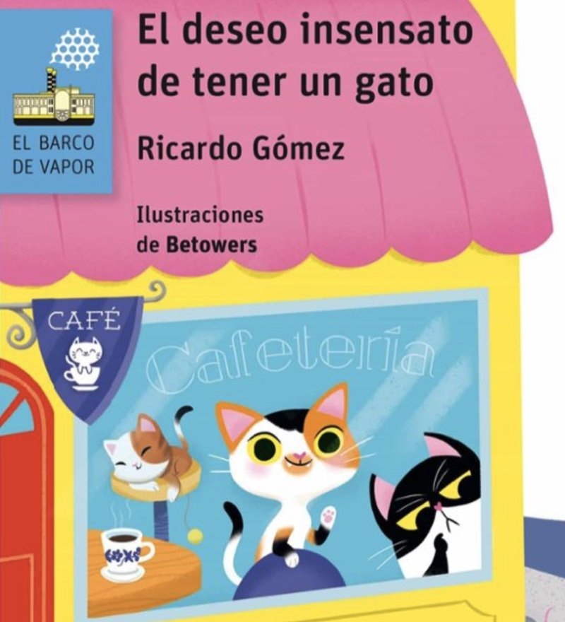
—¡Mamá, cómprame un gato!
—Pero hijo, ¿estás tonto? ¡Comprarte un gato! Como te oiga tu padre...
Mi madre no quiere comprarme un gato.
El otro día, cuando se lo pedí por segunda vez, hizo un gesto de fastidio y me respondió que no, que ni hablar. Dice que no quiere animales en casa, ¡y menos un gato! Que ya somos muchos, que para animal ya estoy yo y que ya tiene bastantes preocupaciones conmigo.
Narrativa infantil • Editorial SM
El protagonista de nuestra historia es un incomprendido. Es el pequeño de la familia y sueña con hacer cosas que nadie entre los suyos ha hecho, como viajar por el mundo y ser pirata. Además, sus padres no quieren que adopte un gato. ¿Pero qué hay de malo en tener un gato como mascota?, dice. No es un animal peligroso como una serpiente o una tarántula. Es solo un gato... Pero las cosas en realidad no son tan sencillas como parecen.
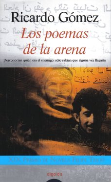
Novela para adultos • Editorial Algaida
Cuatro soldados comparten guardia en una casamata perdida en medio del desierto. El calor, la arena, el tedio y el miedo marcan sus días. Para sobrevivir al aburrimiento, juegan al ajedrez con piezas talladas artesanalmente, leen poesía árabe y recuerdan su patria lejana. Una historia sobre la guerra, la amistad y el poder de la poesía en las situaciones más extremas.
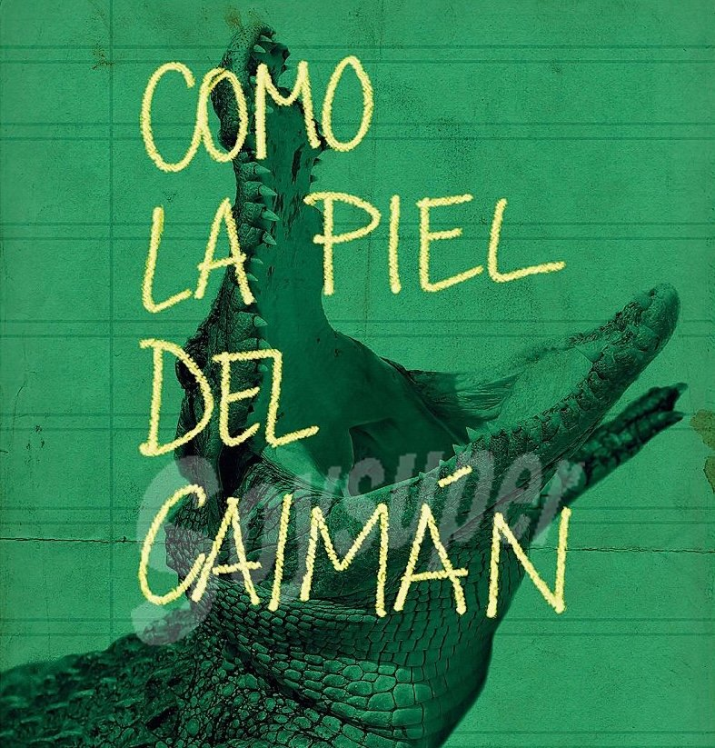
Novela juvenil • Editorial SM
El protagonista, Rubén, narra en primera persona los sucesos que derivaron en unos hechos dramáticos. Todo comenzó con la llegada a clase de Wilson, un joven inmigrante que sufre el bulling de algunos intolerantes compañeros de clase. Una novela que muestra que no hay violencia pequeña y que la intolerancia y el acoso no son juegos sin consecuencias. Wilson no vive en la selva como vivió su abuelo, pero le acechan los caimanes, gentes que no admiten una razón que no sea la suya porque su piel es dura y correosa.
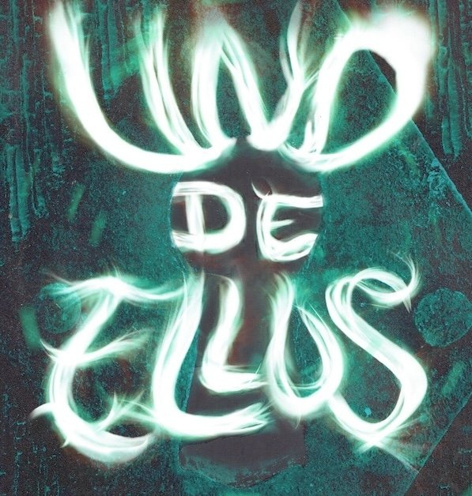
Novela juvenil • Editorial SM
Una finca heredada. Unos días en familia para descansar. Tranquilidad. Pero ¿quién asegura que al apagar la luz todo va a seguir igual? Comenzaron invadiendo el piso de arriba en silencio. Cuando se dieron cuenta ya era demasiado tarde. Eran muchos, tal vez decenas o cientos. No quedó más remedio que huir con lo imprescindible. Una gran llamarada envolvió la casa. Una inquietante historia de terror psicológico.
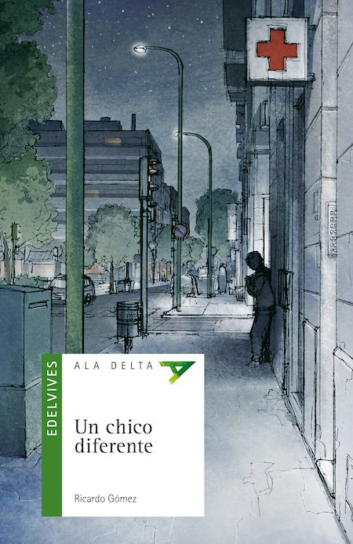
Novela juvenil • Editorial Edelvives
Sam tiene la extraña capacidad de ver el mundo a través de las matemáticas, lo que le convierte en un chico diferente. Su habitación es su refugio, aunque convive con el Monstruo Abominable que se esconde en la Zona Oscura. Pasa las horas con su Cajón y Álbum de las Cosas Interesantes, observando el mundo desde su ventana. Un día, una cámara de fotos será el acicate para salir de su habitación y descubrir que en la calle se esconde un mundo lleno de sorpresas y misterios. Ilustrado por Jordi Vila Delclòs. Con fotografías del autor.
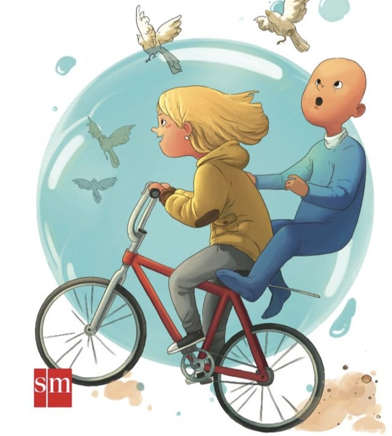
Ciencia ficción juvenil • Editorial SM
Vivir en el siglo XXXIV no es muy diferente a hacerlo hoy en día. Sí, puede que existan esferas de desplazamiento instantáneo, calas, holopadres y telegafas, y puede que el mundo esté unido en paz y armonía. Pero, para un chico de 11 años como Mot, la vida puede ser algo muy aburrido y sin aventuras. Todo cambiará cuando, por accidente (e infringiendo alguna que otra ley), Mot viaje hasta un lugar desconocido para él: el siglo XXI. Un juguete literario sobre viajes en el tiempo y la resolución de un problema fascinante: ¿cómo reparar una máquina del tiempo averiada en una época de tecnología antigua? Ilustrado por David Navarro.
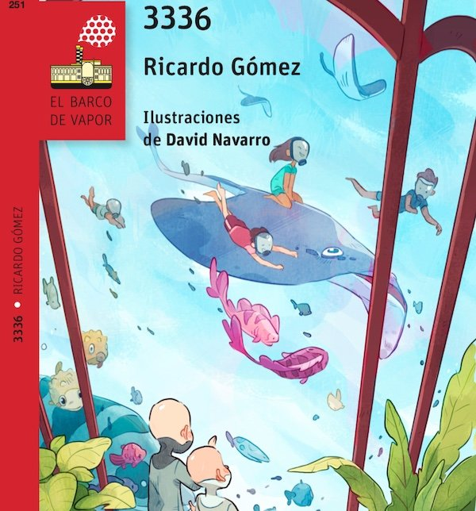
Ciencia ficción juvenil • Editorial SM
Mot ha vuelto de su viaje al pasado en 3333. Pensaba que se haría famoso, pero todo el mundo hace como si esa aventura no hubiera sucedido, incluyendo sus padres. Intrigado por esa indiferencia, junto con su amiga Eva, trata de buscar huellas de su aventura, y juntos descubren otro Mundo que está en el suyo, y que a todos les pasa inadvertido. ¿A todos? No. Gracias a nuevos amigos, entrarán en contacto con Eva y Noé. Pero un grave peligro acecha a la gente que le rodea... ¿Lograrán salvarlos? Spes ultima Dea (La Esperanza es la última de las Diosas). Ilustrado por David Navarro.
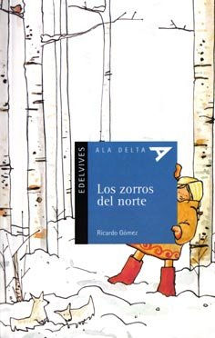
Narrativa infantil • Editorial Edelvives
Ocurrió hace muchos años, en un frío y lejano país del norte. El padre de Katrin era cazador y leñador, pero ella prefería imaginar que era barquero. A Katrin le gustaban los árboles, los animales y las palabras. Un día, vio dos zorros plateados. Le extrañó mucho, pero recordó una leyenda que le contaba su abuela y decidió seguirlos. Una historia mágica sobre la naturaleza, las leyendas y el poder de las palabras. Ilustrado por Ximena Maier.
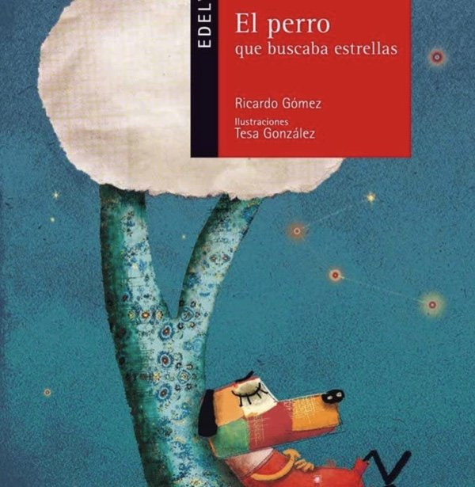
Narrativa infantil • Editorial Edelvives
Gos es un perro vagabundo, y los perros vagabundos van por ahí sin dar explicaciones a nadie. A Gos le gusta perseguir lagartijas y, sobre todo, por las noches, contemplar las estrellas. Un día decide caminar para seguir la pista de estos puntos luminosos, y en su viaje se encontrará con distintas personas, y en especial con un niño con el que iniciará una amistad especial. Gracias a él, Gos cree entender qué son en realidad las estrellas. Un libro bellísimamente ilustrado, un mini-álbum con la preciosa ejecución gráfica de Tesa González.
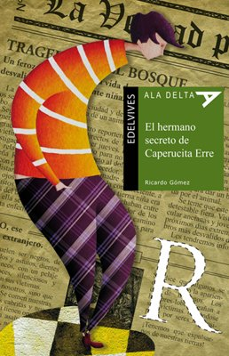
Novela juvenil • Editorial Edelvives
¿Es Caperucita tan inocente como parece? ¿Su madre desconoce el peligro del bosque? ¿La abuela ha sido realmente devorada? ¿Qué intereses esconden Perrault o los hermanos Grimm? Alex, el hermano de Caperucita Erre, va a tener que enfrentarse a prejuicios y ocultas intenciones si quiere dar respuesta a tan espinosos asuntos. Una revisión inteligente y divertida del cuento clásico desde una perspectiva totalmente nueva. Ilustrado por María Lires.
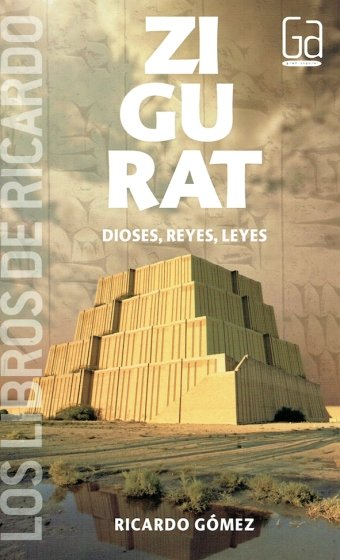
Novela juvenil • Editorial SM - Gran Angular
El destino de Namri parece escrito: es el hijo del rey, y su futuro pasa inevitablemente por el trono. Pero Namri está a punto de experimentar las vueltas que da la fortuna. Cuando Hammurabi se hace con el poder y asume el gobierno de toda Babilonia, el destino de Namri cambiará inevitablemente, obligándolo a luchar por la supervivencia. Una apasionante novela histórica ambientada en la antigua Mesopotamia, en los albores de la civilización.
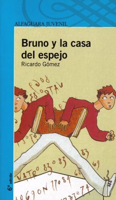
Novela juvenil • Editorial Alfaguara
Bruno está convencido de que en la pequeña ciudad en que vive pueden encontrarse muchos elementos que aparecen en las historias que le apasiona leer. Un día entra en una extraña casa, de la que roba un ejemplar de "Alicia a través del espejo". A partir de aquí se suceden extraños sucesos. ¡Descubrirá que tiene un doble, que ahora ocupa su lugar en casa y en el colegio! Conocerá a curiosos personajes, como Viento, Perro y Caramelo con los que inicia una nueva vida, pero deberá encontrar con urgencia la forma de volver a ser lo que antes era. En caso de no lograrlo, le espera un futuro incierto.
Novela juvenil • Editorial Edebé
Próxima publicación. Editorial Edebé
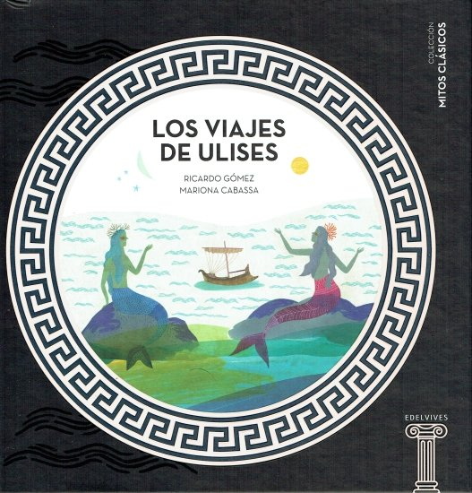
Mitología griega • Editorial Edelvives
Con buen viento, las naves de Ulises habrían tardado solo tres o cuatro días en regresar desde Troya hasta Ítaca, tras la famosa batalla. Sin embargo, el dios Poseidón desvió corrientes y provocó tormentas haciendo que Ulises recorriera islas y puertos por todo el Mediterráneo. Librarse de magas, cíclopes y sirenas, y sortear muchos otros peligros, alargó su viaje de regreso diez largos años. Ilustrado por Mariona Cabassa.
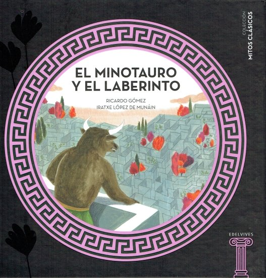
Mitología griega • Editorial Edelvives
El dios Poseidón, ofendido con el rey Minos por no ser capaz de reconocer la ayuda que le prestó al vencer a sus enemigos, lo castiga condenando a su esposa a dar a luz a un niño monstruoso con cuerpo de hombre y cabeza de toro. Cuando crece, el Minotauro se vuelve peligroso y es encerrado en un laberinto. Cada año, el rey Minos exige a Grecia un terrible tributo para aplacar la furia de su hijo. Ilustrado por Iratxe López de Munáin.
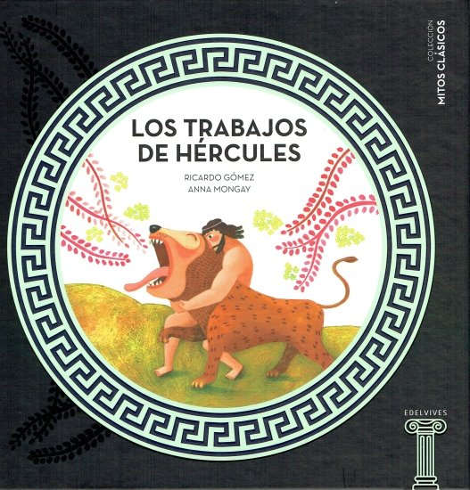
Mitología griega • Editorial Edelvives
Hércules es un niño especial que tiene una fuerza prodigiosa. Sin embargo, la diosa Hera está empeñada en hacerle la vida imposible. Para conciliarse con ella, Hércules va a tener que llevar a cabo doce encargos, cada cual más difícil: matar al león de Nemea, limpiar el estiércol de los establos de Augías, vencer a la hidra de Lerna... Las hazañas del héroe más fuerte de la mitología griega. Ilustrado por Anna Mongay.
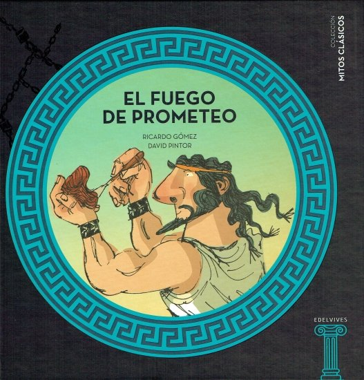
Mitología griega • Editorial Edelvives
Los dioses encargaron a Prometeo y a su hermano que crearan unos seres parecidos a ellos, aunque mortales. Y ambos, con barro, hicieron cientos de animales. Pero un día, Prometeo modeló un ser diferente, con forma humana. Al verlo tan indefenso ante las inclemencias, decidió robar el fuego de los dioses para entregárselo a los hombres. Zeus, furioso ante la osadía del titán, ideará un terrible castigo. Ilustrado por David Pintor.
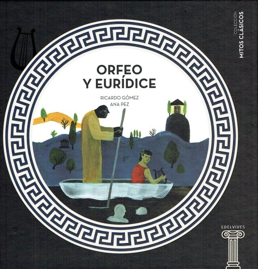
Mitología griega • Editorial Edelvives
El canto de Orfeo cautivaba a flores, animales, ninfas o fornidos guerreros. Un día, el joven conoció a la bella Eurídice y se enamoraron. Pero su felicidad no iba a durar mucho, por culpa de los celos de Aristeo y la desafortunada mordedura de una víbora que mató a su amada. Desolado, Orfeo se propone descender al inframundo para recuperar a su amada. Una conmovedora historia de amor y pérdida. Ilustrado por Ana Pez.
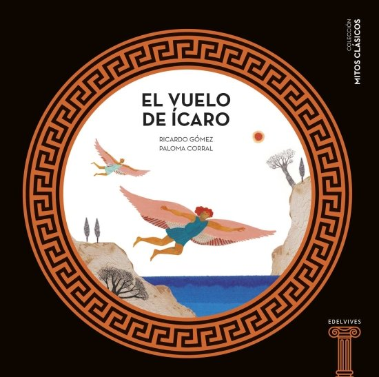
Mitología griega • Editorial Edelvives
Cuando el rey Minos recibe la noticia de que su hijo, el Minotauro, ha sido asesinado por Teseo, y que este ha logrado escapar del laberinto concebido por Dédalo, decide encarcelar al arquitecto y a su hijo, Ícaro, en lo alto de una torre. Dédalo construye unas alas de cera y plumas para escapar volando, pero advierte a Ícaro que no vuele demasiado cerca del sol. Una historia sobre ambición, desobediencia y las consecuencias de no escuchar. Ilustrado por Paloma Corral.
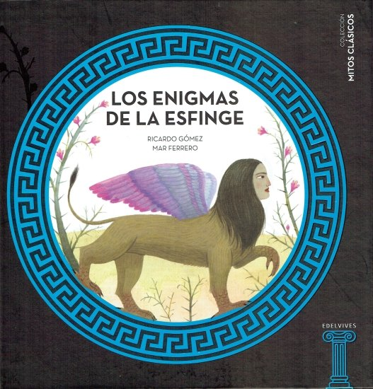
Mitología griega • Editorial Edelvives
La diosa Hera quiere castigar a la ciudad de Tebas por desobedecer sus mandatos, y manda a la terrible Esfinge para que devore a cualquier persona que quiera entrar o salir de allí. El monstruo, no contento con su crueldad, propone a los tebanos un enigma que, si resuelven, les salvará de la muerte. Solo Edipo, un forastero que acaba de llegar, parece tener el ingenio suficiente para vencer a la Esfinge. Ilustrado por Mar Ferrero.
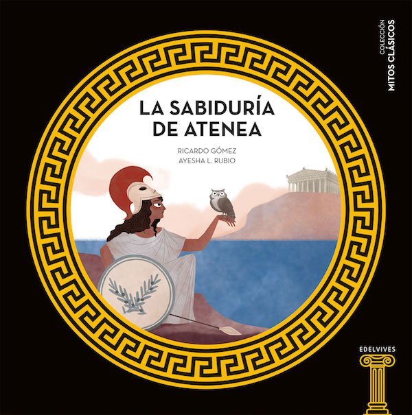
Mitología griega • Editorial Edelvives
Atenea, diosa de la sabiduría y la estrategia, nació de la cabeza de Zeus completamente armada. Su inteligencia y justicia la convierten en una de las diosas más respetadas del Olimpo. Este libro narra las hazañas y la influencia de Atenea en la mitología griega, desde su nacimiento extraordinario hasta su papel como protectora de héroes y ciudades. Ilustrado por Ayesha L. Rubio.
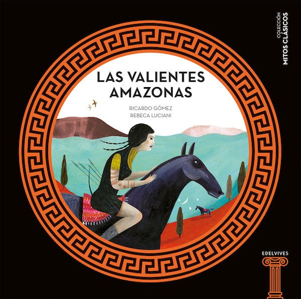
Mitología griega • Editorial Edelvives
Las amazonas eran un pueblo de mujeres guerreras que vivían sin la compañía de hombres. Hábiles cazadoras y arqueras, su fuerza y valentía eran legendarias. Este libro cuenta las historias de estas intrépidas guerreras, sus batallas contra los más grandes héroes griegos y su sociedad matriarcal única en la mitología antigua. Ilustrado por Rebeca Luciani.
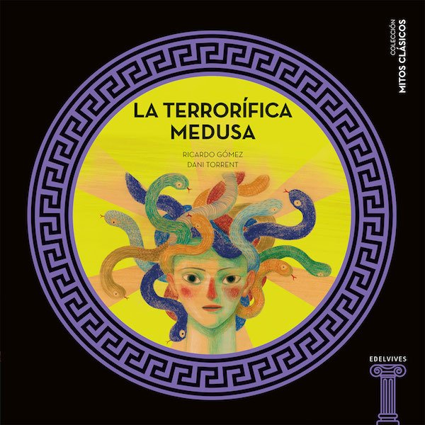
Mitología griega • Editorial Edelvives
Medusa fue una vez una bella joven, pero la ira de Atenea la transformó en un monstruo con serpientes por cabello cuya mirada convertía en piedra a quien la contemplara. Perseo, el valiente héroe, recibe el encargo de traer su cabeza como regalo. La historia de Medusa es una de las más fascinantes y trágicas de la mitología griega. Ilustrado por Dani Torrent.
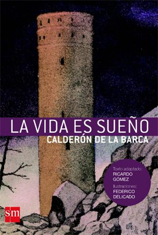
Adaptación de Calderón • Editorial SM
Adaptación de la obra maestra de Calderón de la Barca. Mantiene la "voz" de Calderón y el dramatismo de las relaciones entre los personajes, haciendo accesible a lectores jóvenes esta obra fundamental del teatro español. El príncipe Segismundo, encerrado desde su nacimiento por un vaticinio astrológico, se pregunta sobre la libertad, el destino y la naturaleza de la realidad.
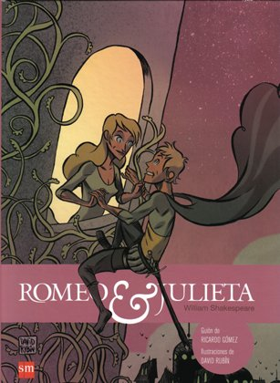
Adaptación de Shakespeare • Editorial SM
La historia de amor más famosa de la literatura universal, adaptada para lectores jóvenes. Romeo y Julieta, dos jóvenes de familias enemigas en la Verona renacentista, se enamoran perdidamente. Su amor imposible y trágico destino han convertido esta obra en el símbolo universal del amor prohibido. El reto en este libro es que contuviera todas las escenas de la obra original. Ilustrado por David Rubín.
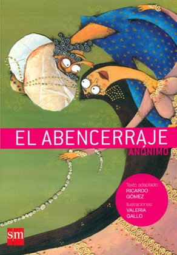
Adaptación de novela morisca • Editorial SM
Adaptación de esta joya de la literatura española del siglo XVI. La historia de Abindarráez, un noble moro del linaje de los Abencerrajes, y su amor por la bella Jarifa, en un contexto de enfrentamientos entre moros y cristianos. Una historia sobre el honor, la amistad y la nobleza que trasciende las diferencias religiosas y culturales.
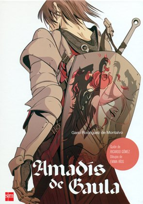
Adaptación de novela de caballerías • Editorial SM
Adaptación de la más famosa novela de caballerías española. Las aventuras del caballero Amadís, sus hazañas en defensa de los débiles, sus combates contra gigantes y encantadores, y su amor inquebrantable por la princesa Oriana. Una obra fundamental que influyó en toda la literatura de caballerías europea, incluido el Don Quijote de Cervantes. El desafío era condensar en unas pocas páginas el espíritu de la obra original. Ilustrado por Emma Ríos.
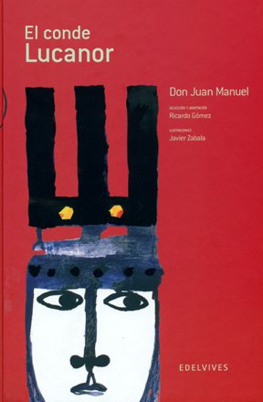
Adaptación de Don Juan Manuel • Editorial Edelvives
Adaptación de la obra maestra medieval de Don Juan Manuel. Una colección de cuentos en los que el Conde Lucanor pide consejo a su sabio consejero Patronio sobre diversos problemas. Cada cuento encierra una moraleja sobre la prudencia, la astucia y la sabiduría necesarias para gobernar y vivir. Ilustrado por Javier Zabala.
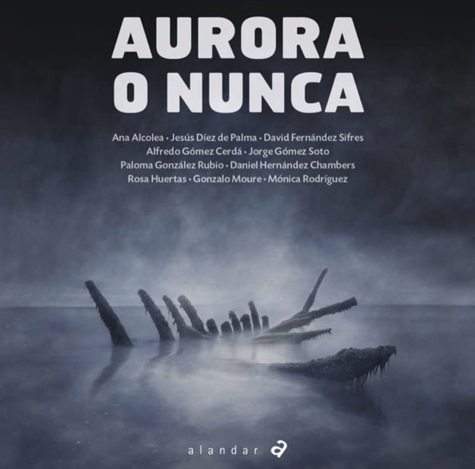
Obra colectiva • Editorial Edelvives
Por razones de peso no llegué a escribir un relato, aunque participe con otros diez prestigiosos colegas en la creación de este lugar imaginario que es Aurora: un pueblo perdido en las brumas del norte, en la latitud 42ºN. Un sitio en el que nadie puede ser feliz porque esconde un terrible secreto derivado de su historia como saqueadores de naufragios. Una geografía inquietante que esconde una maldición. (Una experiencia literaria también: la escritura de una novela a veinte manos).
Obra colectiva • Editorial Edelvives
Me sumo aquí a los Cronistas de Aurora, con la creación de peronajes y narraciones. El pueblo está de fiesta, pero la terrible maldición de Livjatan no olvida a sus habitantes. Una acumulación de hechos extraordinarios presagia una pesadilla: un estremecedor encuentro en el tren de la bruja, una loca que espera el regreso de su hermana muerta, una visita fantasmal... Se agota el tiempo: ¡ha llegado la hora! (Esta vez, somos veintidós manos escribiendo la novela).
Obra colectiva • Editorial Edelvives
Nos enteramos aquí del origen de la maldición de Aurora. Una fría mañana de 1830, el destino de sus habitantes cambia cuando reciben una temeraria propuesta. Empujados por la pobreza, buena parte de los hombres (y alguna mujer) parten en busca de la ballena, en una caza desesperada. El viaje y el regreso marcarán para siempre el destino de esta población maldita. Con esto cerramos una trilogía, en la que cada libro se puede leer como una novela independiente. ¡Una experiencia única, de trabajo y amistad!
Obra colectiva • Editorial SM
Veintiún autores se enfrentan sin miedo, y de forma a veces muy poco complaciente, a las múltiples caras de este gravísimo problema que constituye hoy y ahora una terrible forma de tortura para muchos escolares. Veinte escritores de reconocido prestigio y un ilustrador reclaman nuestra mirada hacia este espejo oscuro. Incluye el relato de Ricardo Gómez "No lo entiendo".
Obra colectiva
Ocho escritores hablan sobre sus manías, procesos creativos y asuntos relacionados con la escritura. Ricardo Gómez contribuye con "Apocalipsis 2008", donde reflexiona sobre su oficio de escritor y comparte sus experiencias y reflexiones sobre el acto de contar historias.
Obra colectiva
Treinta autores de ambas orillas del Atlántico, quince españoles y quince latinoamericanos, narran historias que conectan dos mundos unidos por el océano. Un proyecto literario que celebra los lazos culturales y humanos entre España y América Latina a través de la palabra escrita.
Obra colectiva
Veintiún escritores reflexionan sobre la educación, su importancia y sus desafíos en el mundo contemporáneo. Historias que ponen en valor el papel fundamental de la enseñanza y el aprendizaje en la formación de las personas y la construcción de una sociedad más justa y libre.
Obra colectiva • Editorial SM
Celebración del 40 aniversario del Premio Barco de Vapor con cuarenta cuentos escritos por los ganadores del prestigioso galardón. Una antología que recoge lo mejor de cuatro décadas de literatura infantil y juvenil española, mostrando la evolución y la calidad de este género literario. Participo en el libro con el relato "Guárdame el secreto" (página 139), con una ilustración de Adolfo Serra, preciosa.
Obra colectiva
Una colección de relatos sobre la diversidad, la inclusión y el respeto a las diferencias. Historias que nos recuerdan que todos somos únicos y, al mismo tiempo, compartimos una humanidad común. Un libro que celebra la riqueza de ser diferentes y la importancia de la empatía. Contribuyo en el libro con el primer relato, 'Leer el cielo', ilustrado (magníficamente) por Alba Marina Rivera.
Obra colectiva • Editorial Kalandraka
Siete autores utilizamos las biografías u obras de otros tantos escritores de fantasía y ciencia ficción para escribir cuentos basados en sus libros o personajes. En mi caso, en el cuento titulado "La visita", recreo el encuentro de Stanilaw Lem con un personaje venido de otro mundo, Ijon Tichy, que inspirará muchas de sus obras. Las ilustraciones, magníficas, son de Federico Delicado.
Obra colectiva • Editorial Loqueleo - Santillana
El reto, entre doce escritores, era inventar un pueblo, una calle y un personaje, con la regla de que cada uno debía jugar con el personaje propio y alguno de los ajenos. Los doce relatos configuran la historia de una calle, por cuyos tejados, balcones y ventanas se asoman misterios y secretos del pasado. Aunque cada historia no identifica a su autor, contribuí con el relato "La bicicleta" (capítulo 4) y un personaje que me encantó: la rebelde Tona.
Obra colectiva • Editorial Bruño
Veinte ilustradores y veinte autores cedemos nuestras obras a una iniciativa solidaria, la "Fundación Leucemia y Linfoma", por intermediación de Bruño y de "Menudo Castillo". Un libro de lujo, magníficamente editado. Participo en él con el cuento "El Hada Nada-de-Nada", la historia de un hada cansada del papel asignado a las de su especie, y que toma sorprendentes decisiones. Como en muchas ocasiones, ilustrado por Tesa González.
Obra colectiva • Editorial Lengua de Trapo
Un conjunto de relatos antibélicos que muestran las terribles consecuencias de los conflictos armados en las personas comunes. Historias que denuncian la guerra y sus devastadores efectos, poniendo rostro humano a las estadísticas y recordándonos el verdadero coste de la violencia. En mi caso, cree el relato 'La última foto de Robert Capa", que podrás leer completo en el apartado PARA LEER, de esta página.
Obra colectiva • Editado por la Junta de Castilla La Mancha
41 autores, docentes o narradores orales (entre ellos Rosa Regás, Amos Oz, John Berger, Rosa Regás...) damos distintas visiones sobre la lectura, su creación o su promoción, en textos ensayísticos o literarios. En mi caso, aporté el cuento "Las garzas del lago de Huan Hao", que podrás leer completo en el apartado PARA LEER de esta página web.
2026
En el marco del FestiLIJ26, en su IX edición, celebrada en Tres Cantos (Madrid), me conceden este premio "por mi dedicación a la Literatura Infantil y Juvenil". Me enorgullece esta distinción, concedida otros años a notables colegas: Luisa Villar, Concha López Narváez, Alfredo Gómez Cerdá y Jordi Sierra y Fabra. ¡Por la LIJ, su presente y su futuro!
2024
Por la novela "Los mapas del agua", una historia situada en el desierto australiano, donde el agua es vital y las mujeres-agua, las N'Wone, tienen en sus manos (y en sus oídos) la supervivencia de los pequeños pueblos, en los que la poesía y las canciones son el mapa de esos territorios.
2006
Por "Ojo de Nube", una historia sobre un niño ciego en una tribu crow que se convierte en el miembro más útil de su comunidad gracias a sus extraordinarias habilidades. El libro ha sido traducido al italiano, alemán, francés, coreano... ¡y al Braille!
2006
Reconocimiento al conjunto de mi obra de literatura infantil y juvenil. Un honor que me honró con miedo, a sabiendas de que había colegas con más méritos que los míos.
2016
Por "Mujer mirando al mar". Elena, la protagonista de mi historia, me llevó a conseguir un premio de tanto prestigio. Fue emoción pura al pensar en ello.
2003 y 2013
Por "El cazador de estrellas" (situado en el Sáhara) y "Juegos inocentes juegos" (en relación con los drones), dos historias realistas y vinculadas con la actualidad. El tipo de literatura que me atrae y me gusta hacer.
1996 y 1997
Reconocimiento por mi trabajo literario en dos ediciones consecutivas de este prestigioso premio que honra la memoria del gran escritor vasco Ignacio Aldecoa.
2004
Por "El Cazador de Estrellas". Seleccionado por la Biblioteca Internacional de Múnich como uno de los mejores libros juveniles del año a nivel internacional.
Varios años
Organización Española para el Libro Infantil y Juvenil. Varios de mis libros han sido seleccionados y recomendados por esta organización para fomentar la lectura entre los jóvenes.
2015
Por "El Sueño de Lu Shzu", ilustrado por Tesa González. Reconocido como el mejor álbum ilustrado del año en Brasil. Tres años de trabajo conjunto para crear esta joya.
Varias ediciones
International Board on Books for Young People. Reconocimiento internacional por la calidad literaria de mis obras dirigidas al público infantil y juvenil.
Varios años
Cuando comencé a escribir literatura adulta, me presenté a algunos premios de relatos, por aquello de 'examinarme'. Tampoco conocía a nadie en este mundillo. Fruto de esos envíos fueron el Premio Unión Latina en París, el de Cuentos de La Felguera, el Gabriel Miró, dos veces el Aldecoa, el Ciudad de Mula... Todo esto me animó a iniciar una escritura más dedicada.
Varios años
Incluso me atreví a escribir poesía, en plan "intruso". Me dieron el "Pedro Iglesias Caballero", en Cabra, y el "Café Croché", en San Lorenzo de El Escorial. No sé si algún día volveré a las andadas. También en este género he escrito algunas cosas más, como los poemas que aparecen en "Mujer mirando al mar".
Charlas sobre literatura, educación y el compromiso del escritor
He defendido que el principal compromiso del escritor es con la propia literatura, entendida como el arte de imaginar, descubrir, comunicar y compartir a través de la palabra. Los escritores solemos olvidar en ocasiones que la escritura tiene varios milenios de existencia, que la narración oral lleva existiendo varios milenios más, y que nuestra responsabilidad es intentar ahondar desde una perspectiva distinta, o con una mirada más profunda, sobre asuntos que ya han sido tratados una y otra vez a lo largo de los siglos.
Leer conferencia completa →Confieso ser un lector voraz, pero desastroso. A veces, sobre mi mesilla de noche hay dos o tres novelas que leo asistemáticamente, alternando unas y otras. Cuando me llega alguna revista científica a la que estoy suscrito, interrumpo esa lectura para dar cuenta de algún artículo que llama mi atención. Me son muy queridos los géneros diarísticos y aquellos en que los escritores hablan sobre escritores, y especialmente sobre sí mismos.
Leer conferencia completa →En ocasiones, sobre todo entre lectores poco frecuentes o adolescentes, la literatura produce empacho, y el propósito de leer un libro, por excelso que sea, se convierte en un obstáculo insalvable. Pero hay otras vías para saciar el hambre e incluso para incitar el sentido del gusto: pequeñas porciones.
Leer un extracto de la conferencia →Cada escritor es producto de su experiencia lectora y su perspectiva vital. En mis tiempos "no existía" la literatura juvenil. En el colegio y en el instituto se leía lo que a uno le obligaban, que era más bien poco y fragmentario, lo suficiente para aprenderse ristras de autores, fechas y títulos, y algunos textos breves que se suponía permitían diferenciar entre géneros, épocas, temáticas y estilos.
Leer es un placer, pero también es trabajoso, ya que requiere de esfuerzo y de concentración. Aunque no tengo la solución para fomentar la lectura entre los adolescentes, recalco la importancia de darles protagonismo y les invito a escribir sobre cualquier cosa, aunque sea con faltas de ortografía. El acto de escribir, de poner en palabras los propios pensamientos, es fundamental para el desarrollo personal.
Cuentos, fragmentos de novelas, poemas y textos completos
Algunos de mis cuentos están recogidos en libros como Tras el cristal o Cuentos crudos. Otros han sido publicados en diferentes momentos y están ya libres de contratos. Los ofrezco ahora, juntos y completos y añado, no sin recato, algunos poemas.
Líneas que un día me asombraron a mí... y quizá te sorprendan a ti.
"A estas alturas debes haberlo adivinado: vengo de otro planeta. Pero nunca te diré llévame ante tus dirigentes. Ni siquiera yo, poco acostumbrada como estoy a vuestras maneras, cometería tal error... En cambio te diré: Llévame ante tus desayunos, tus puestas de sol, tus malos sueños, tus zapatos, tus sustantivos. Llévame ante tus dedos; ante tus muertes. Esos sí valen la pena. Eso es lo que vine buscando."
"Si pudiera ser un indio, ahora mismo, y sobre un caballo a todo galope, con el cuerpo inclinado y suspendido en el aire, estremeciéndome sobre el suelo oscilante, hasta dejar las espuelas, pues no tenía espuelas, hasta tirar las riendas, pues no tenía riendas, y sólo viendo ante mí un paisaje como una pradera segada, ya sin el cuello y sin la cabeza del caballo."
"La tierra bajo sus botas era como un viejo colchón chirriante y elástico: encima una capa de hojas ligeras, frágiles, diferentes entre sí también en la muerte; y, debajo, otra de hojas disecadas, viejas, de hace años, que se habían macerado y que constituían una única masa marrón: polvo de la vida que un día había brotado en capullos, susurrado en el viento de una tormenta, brillado al sol después de una lluvia."
"Las bibliotecas de los críticos suelen ser estupendas, primero por la inmensa cantidad de libros (no los compran, se los mandan de regalo las editoriales, con dedicatorias lambonas de los autores), y segundo porque la mayoría de ellos permanecen intonsos, como nuevos, no teniendo el crítico de tiempo ni ganas de leer los libros que reseña. En Angosta se sabía que el lema de Afamador era el siguiente: Reseño los libros antes de leerlos; así, cuando los leo, ya sé qué pensar de ellos."
"No basta con lamentarnos, criticar al gobierno, a los capitalistas o a las multinacionales. Es necesario mucho más. Basta con resistir culturalmente como lectores. Militantes de la lectura. Resistentes de la cultura. Frente a la dictadura de la basura, hay que insistir en lo bueno, defender el derecho a leer literatura."
"Yo creo que la verdad siempre es simple. Y lo es por fuerza. Tiene que ser bastante simple como para que la entienda un niño. De lo contrario sería demasiado tarde. Cuando la comprendieras ya sería tarde."
"En mi opinión, solo deberíamos leer libros que nos muerdan y nos hieran. Si el libro que estamos leyendo no nos sacude como un golpe en el cráneo, ¿para qué molestarnos en leerlo? ¿Para que nos haga felices, como tú dices? Dios mío, seríamos igual de felices si no tuviéramos ningún libro."
"Van pasando, pasan, pasan, deslizándose los años, por utilizar una desgarradora inflexión horaciana. Pasan los años, cariño, y con el tiempo nadie sabrá lo que tú y yo sabemos. Crece nuestro hijo; las rosas de Paestum, del neblinoso Paestum, han desaparecido; estúpidos mecanicistas manosean ciertas fuerzas de la naturaleza que algunos mansos matemáticos, para su propia y secreta sorpresa, parecen haber presentido; de modo que quizá haya llegado la hora de que examinemos algunas instantáneas antiguas, pinturas rupestres de trenes y aeroplanos, estratos de juguetes en el pesado armario."
Donde la literatura y las matemáticas se encuentran
Hace no mucho tiempo, solo unos cuantos miles de años, nadie pensaba en términos de "matemáticas" y "literatura", porque nadie había inventado aún esas palabras. El lenguaje y las matemáticas discurrían en paralelo. Hubo un momento en el que alguien creó la palabra "ave" para representar una abstracción que comprendía por igual a los buitres, los jilgueros, los vencejos. Lo mismo ocurrió con "cinco". La literatura, como las matemáticas, nacen del pensamiento y no de la acción.
Conferencia en la Universidad de Santiago de Compostela. Nadie que esté aquí presente logrará nunca el Nobel de Matemáticas porque, como es sabido, no existe. Alfred Nobel consideró que las matemáticas no constituyen "una fuente de beneficio práctico para la humanidad". Pero las matemáticas son mucho más que números: son una forma de pensar, de ver el mundo, de resolver problemas creativamente.
Muchos experimentos realizados con animales, y en particular con primates, tratan de conocer no solo las aptitudes numéricas del animal, sino también de saber cómo los seres humanos desarrollaron las nociones de número, cantidad, orden y operación. Hubo un tiempo en que los humanos probablemente no poseían más capacidades numéricas que las de los actuales chimpancés.
Los números primos son fundamentales para la criptografía moderna. Saber si un número es primo es relativamente sencillo, pero determinar cuáles son sus factores primos puede llevar millones de años de computación. Esta asimetría es la base de la seguridad en Internet. Por encima de nuestras cabezas, a la velocidad de la luz, viajan billones de datos cifrados con números primos largos, casi imposibles de factorizar.
Arquímedes fue uno de los gigantes de las matemáticas, a las que dedicó buena parte de su larga vida. Sus escritos fueron copiados y vueltos a copiar durante generaciones y no se entendieron plenamente hasta dieciocho siglos después. Muchos estudiosos consideran que si hubiera que nombrar tres matemáticos de la historia de la humanidad, uno de ellos sería Arquímedes; otro, Newton y el tercero, quizá Gauss.
Hace mucho tiempo (unos 30 años, todavía no habían llegado los ordenadores), proponía a mis alumnos problemas ilustrados por mi amigo Antonio Varas. ¡Qué tiempos, en los que uno se apañaba con una máquina de escribir y una caja de rotuladores! En esta sección de mi web comparto problemas matemáticos, reflexiones y lecturas recomendadas.
Hace años, tuve la suerte de visitar el Sáhara y de conocer a hombres, mujeres y niños que viven en un desierto terrible. Una inconclusa descolonización, la invasión de un país extranjero, la contumacia de nuestros gobernantes y la incapacidad de la ONU no ha resuelto después de décadas un problema vergonzoso.
Desde aquel primer viaje he hecho una docena más, casi siempre en relación con el Bubisher. Pero el apoyo no solo se puede hacer allí, sino también aquí, y siempre con personas que sentimos que el Sáhara sigue siendo una parte distante de este país, mientras el Sáhara Occidental no obtenga su liberación y por tanto su independencia.
(Foto de Inés G. Aparicio.)
En el desierto, el bubisher es el pájaro que trae la buena suerte. Lo utilizamos como símbolo de los libros que viajan hasta las bibliotecas, escuelas, jaimas y calles saharauis. Comenzó como un pequeño proyecto, que hoy asombra y es candidato en 2026 al Premio "Astrid Lindgren Memorial Award" (ALMA), de promoción de la lectura. Si quieres conocer su origen, desarrollo y trabajo...
Construir y mantener bibliotecas, pagar a bibliotecarias y ayudantes saharauis, trasladar libros o comprarlos, llenar el combustible de los bibliobuses... supone esfuerzo y dinero, que íntegramente se traslada al desierto. Desde aquí se puede ayudar de muchas formas: haciéndose socio de Bubisher, realizando pequeñas donaciones, ofreciéndose a formar personal o... ¡llevándote libros que editamos a cambio de una pequeña ofrenda! Si quieres saber cómo echar una mano...
No hay que olvidar que los saharauis hablan español, que estudiaron en español y que escriben en español. No han olvidado su lengua y su poesía o sus cuentos y novelas tratan de mantener la cultura inmemorial de su pueblo y de ser un testimonio de la añoranza por sus tierras y la lucha por su liberación. Necesitan apoyo, tanto aquí como en el desierto. Si quieres conocer sus obras...